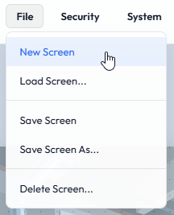
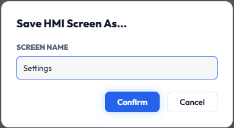
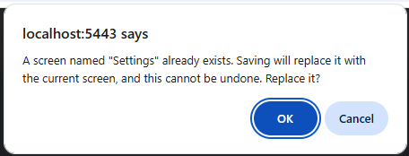
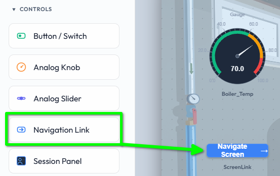
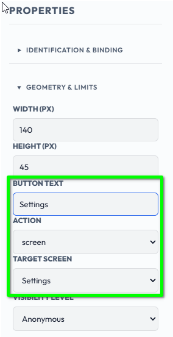
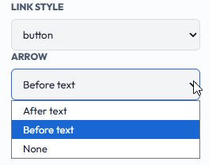
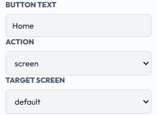
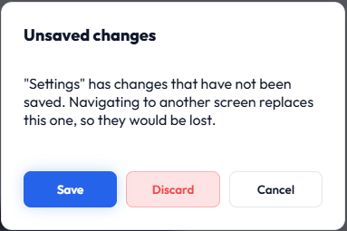

SentinelSCADA › Tutorial › Chapter 7
So far our BoilerHouse project has lived on a single screen. Real projects have many: an overview, a page for alarms, a page for settings, and so on. In this chapter we add a second screen, Settings, and give the operator a way to move between the two. We will build on Settings with some controls in a later chapter.
From the File menu choose New Screen.

The canvas resets to the default size and background we set in Project Properties in Chapter 5.
Now choose File > Save Screen As… and name the screen Settings.

Screen names may contain letters, numbers, underscores and hyphens. Anything else, including spaces, is quietly removed from the name.

We need a way to get to Settings from our main screen. Open the main screen, then from the Toolbox open the Controls section, choose the Navigation Link and drag it onto the canvas.

With the link selected, its properties appear in the Properties panel:
Settings.screen.Settings.

The Arrow setting applies to the Button and Text styles. A Hotspot has no label, so the setting is hidden for it. When you change a link's Action to login, logout or exitKiosk, the arrow turns off by itself, since an arrow suggests going somewhere, and it comes back if you change the Action back to screen. A choice you made deliberately, such as Before text, is never changed.
A one-way trip is not much use. We need a counter link on the target screen, and we can take a short cut here: select the link you just made and copy it with Ctrl+C.
Open your new Settings screen, paste, and set the link's Target Screen to the main screen so the operator can return. In our example the link is labelled Home and points at the default screen. A left arrow suits a link that goes back, so set its Arrow to Before text and it reads ← Home.

Navigation Links only act in Run Mode. In Design Mode, clicking a link just selects it so you can edit it.
Switch to Run Mode from the View menu and click the Settings link. The screen changes. Click the link on Settings to come back.
Edits you make in Design Mode stay on the canvas when you switch to Run Mode to try them out, and the orange unsaved dot stays on. Clicking a link loads another screen, which would replace them, so if the screen has unsaved changes Sentinel asks first:

You will not lose work by accident. A screen that has never been saved has no name to save under, so for that case the prompt has no Save button and suggests File > Save Screen As… first.
A Navigation Link does not have to change screen. Its Action can also be:
These are never access-gated, since they are not tied to a target screen. We met login and logout from the Session Panel in Chapter 3.
Two settings control who can use a link:
A link can be visible to everyone but greyed out for every user below a certain access level, such as Engineer, as in Chapter 6's example. See Chapter 6 for the full walk-through.
screen and a Target Screen moves the operator between screens in Run Mode, and always sits on top of other widgets.In this chapter we created a second screen and linked the two together so an operator can move between them. In the next chapter we will make our screens look like a plant, using the built-in graphic objects: pumps, valves, tanks and pipes that change with the process.